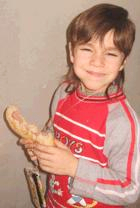

AZERBAIJAN + ARMENIA = ?

“When my parents learnt that our school was going to hold a seminar and Azerbaijanians were to arrive, first they stopped believing in it, they said it was impossible, who would allow them to cross the border and come to Armenia?”, - says Vahan.
There is nothing impossible. “Mkhitar Sebastatsi” Educational Complex was attended by the human rights activists from Gyanji, Mingechaur and Kazakh within the “Days of Azerbaijan” project held from 17th to 21st of December. The human rights activists included Sahib Babaev, Jiansha Omar and Hamis Masimov, “Consensus” of the chairman of non-governmental organization Afet Sariev and the author Seymur Baijan from Baku. They discussed with the children a number of questions in area of the protection of rights, literature and journalism.
“These days did fly very fast. Hardly had we got accustomed to the idea that the Azerbaijanians were to conduct the seminars when it was all over. Anyway, I wish they arrived more frequently. As my views on them were radically changed, I do wish others had a chance of meeting with them so as to understand that they are also people like us”, - says Dianna.
“What is more interesting here is that as soon as the Azerbaijanian delegation arrived at the school, I distinguished three of them at once by the moustache and the golden teeth they had. As for the other two, they had a close resemblance in appearance with Armenians. Oh, my God, what nonsense I am talking about. It appears that Armenians do not have golden teeth? We meet each other so rarely that sometimes we treat them as aliens, extraterrestrials”,- says Edgar.
“My father was against my participating in the seminar, but during those days when I told my parents about the seminars, they understood that there was nothing strange in it. We made friends with the Azerbaijanians and when they leave us we will miss them ever so much,”- says Amalia.
In the beginning before the seminar started the participants had been guided by the following slogan: “Keep away from them!” Today, the slogan reads: “They are the same people as we are!”
“The children who were disallowed to participate in the seminars for clear reasons, we tell them about everything and arouse envy in them because we communicated with the Azerbaijanians and made friends with them!”, - say the pupils of “Mkhitar Sebastatsi” Educational Complex.
Written by A. Vardanyan, T. Danielyan
20-12-2007
There is nothing impossible. “Mkhitar Sebastatsi” Educational Complex was attended by the human rights activists from Gyanji, Mingechaur and Kazakh within the “Days of Azerbaijan” project held from 17th to 21st of December. The human rights activists included Sahib Babaev, Jiansha Omar and Hamis Masimov, “Consensus” of the chairman of non-governmental organization Afet Sariev and the author Seymur Baijan from Baku. They discussed with the children a number of questions in area of the protection of rights, literature and journalism.
“These days did fly very fast. Hardly had we got accustomed to the idea that the Azerbaijanians were to conduct the seminars when it was all over. Anyway, I wish they arrived more frequently. As my views on them were radically changed, I do wish others had a chance of meeting with them so as to understand that they are also people like us”, - says Dianna.
“What is more interesting here is that as soon as the Azerbaijanian delegation arrived at the school, I distinguished three of them at once by the moustache and the golden teeth they had. As for the other two, they had a close resemblance in appearance with Armenians. Oh, my God, what nonsense I am talking about. It appears that Armenians do not have golden teeth? We meet each other so rarely that sometimes we treat them as aliens, extraterrestrials”,- says Edgar.
“My father was against my participating in the seminar, but during those days when I told my parents about the seminars, they understood that there was nothing strange in it. We made friends with the Azerbaijanians and when they leave us we will miss them ever so much,”- says Amalia.
In the beginning before the seminar started the participants had been guided by the following slogan: “Keep away from them!” Today, the slogan reads: “They are the same people as we are!”
“The children who were disallowed to participate in the seminars for clear reasons, we tell them about everything and arouse envy in them because we communicated with the Azerbaijanians and made friends with them!”, - say the pupils of “Mkhitar Sebastatsi” Educational Complex.
Written by A. Vardanyan, T. Danielyan
20-12-2007